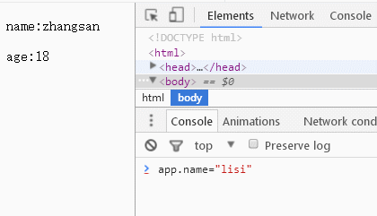
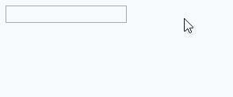

原理
其实原理很简单，就是拦截了Object的get/set方法，在对数据进行set(obj.aget=18)时去重现渲染视图
实现方式有两种
-
方式1
定义了同名的get/set就相当于定义了age
var test = { _age: 18, get age() { console.log('触发get'); //直接会this.age会进入死递归的 return this._age; }, set age(age) { console.log('触发set'); this._age = age; } };为了让test不显示多余的变量，可以把_age定义在外部
var _age = 18; var test = { get age() { console.log('触发get'); //直接会this.age会进入死递归的 return _age; }, set age(age) { console.log('触发set'); _age = age; } }; -
方式2
使用这种方式完美的解决了对象内包含多余的变量的问题
function test() { var _age = 18; Object.defineProperty(this, "age", { get: function () { console.log('触发get'); return _age; }, set: function (value) { console.log('触发set') _age = value; } }); } var t = new test(); t.age=18;
实现数据到视图的绑定
这里的渲染只是一个简单的正则替换
要实现Vue那么强大的功能还要自己实现一个模板引擎

<div id="test">
<p>name:</p>
<p>age:</p>
</div>
function Element(id, initData) {
var self = this;
var el = document.getElementById(id);
var templet = el.innerHTML;
var _data = null;
if (initData) {
_data = {};
for (var variable in initData) {
_data[variable] = initData[variable];
bind(variable, self);
}
}
function bind(variable, obj) {
Object.defineProperty(self, variable, {
set: function (value) {
//使用_data里的数据，避免死递归
_data[variable] = value;
//每次被设置新值的时候重新渲染界面
render();
},
get: function () {
return _data[variable];
},
});
}
//渲染
function render() {
var temp = templet;
temp = temp.replace(/\{\{(.*)\}\}/g, function (s, t) {
if (_data[t]) {
return _data[t];
}
});
el.innerHTML = temp;
}
//初始化时候手动渲染一次
render();
}
var app = new Element('test', {
name: 'zhangsan',
age: 18
})
实现视图到数据的绑定
这里做一个简单的input改变的事件监听
每次渲染之后都要重新添加事件，用时间委托可以实现,但是input的focus位置不能保留
可见Vue内部的渲染和事件绑定肯定不是像这里demo写的那么简单，这里只是大致的原理(可能并不是这样的。。。)

<div id="test">
<input type="text" value="">
<br>
<span></span>
</div>
function Element(id, initData) {
var self = this;
var el = document.getElementById(id);
var templet = el.innerHTML;
var input = el.getElementsByTagName('input')[0];
var _data = initData;
Object.defineProperty(self, 'data', {
set: function (value) {
_data = value;
render();
},
get: function () {
return _data;
},
});
//渲染
function render() {
var temp = templet;
temp = temp.replace(/\{\{(data)\}\}/g, function (s, t) {
return _data;
});
el.innerHTML = temp;
//重新添加事件，其实应该用事件委托的
input = el.getElementsByTagName('input')[0];
inputchange();
input.focus();
}
function inputchange() {
if (window.attachEvent) {
input.attachEvent("oninput", temp);
} else if (window.addEventListener) {
input.addEventListener("input", temp, false);
}
function temp() {
self.data = input.value;
}
}
//初始化时候手动渲染一次
render();
}
var app = new Element('test', '');